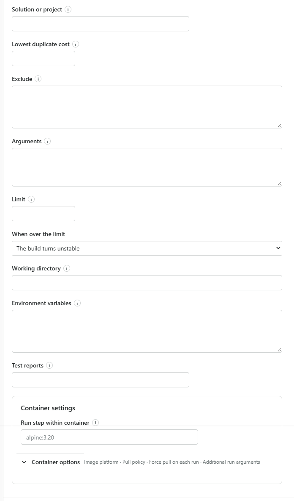

Duplicates (ReSharper)
Runs the dupfinder command line tool on a solution and lists the duplicate blocks on the build, as Duplicates finder does. The tool is not part of Buildspawn.
When to use it
Use it for C# solutions when you have the ReSharper command line tools on the agent.
How to set it up
- Open the build configuration and click Settings › Build Steps.
- Click Add build step. Type
Duplicates (ReSharper)in Filter step types if you like, then click the Duplicates (ReSharper) tile (group Code quality and coverage). - Type a Step name, for example
Find duplicates. - Fill in the fields described below.
- Optional: set Execute step, Conditions and Retry on failure. See The steps list and the step editor.
- Click Save.

Every field
| Field | What it does | Default | Example |
|---|---|---|---|
| Solution or project | The solution (.sln) or project file to search, relative to the working directory. | Empty (required) | Game.sln |
| Lowest duplicate cost | Passed as --discard-cost. Duplicates cheaper than this are not reported. Empty uses the tool default. | Empty | 70 |
| Exclude | One file glob per line, joined with semicolons and passed as --exclude. | Empty | **/Generated/** |
| Arguments | One argument per line, placed before the solution. | Empty | --show-text |
| Limit | Optional. The step is worse when it finds more duplicate blocks than this number. Empty means no limit. | Empty | 20 |
| When over the limit | The build turns unstable or The step fails. | The build turns unstable | The build turns unstable |
| Working directory, Environment variables, Test reports, Run step within container | The same in every runner. See Fields every runner has. |
A worked example
Search the game solution, leaving out generated code. Step name Find duplicates, Solution or project Game.sln, Exclude **/Generated/**.
What you see when it runs
The console shows the dupfinder command. The duplicate blocks are listed on the Code Inspections page of the build.
Problems and fixes
| Problem | What to do |
|---|---|
| The dupfinder command was not found on this agent | Install the dupfinder command line tool or put dupfinder on the PATH. |
| The … step has no solution to search | Fill in Solution or project. |